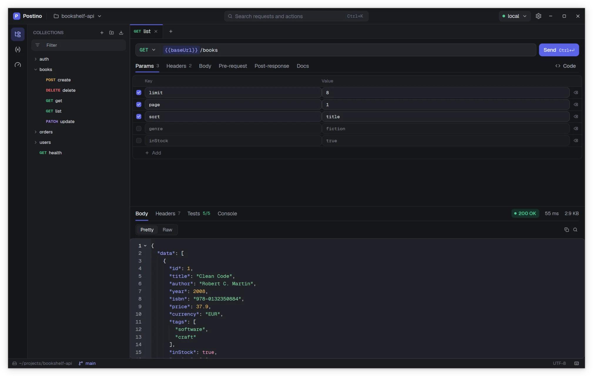
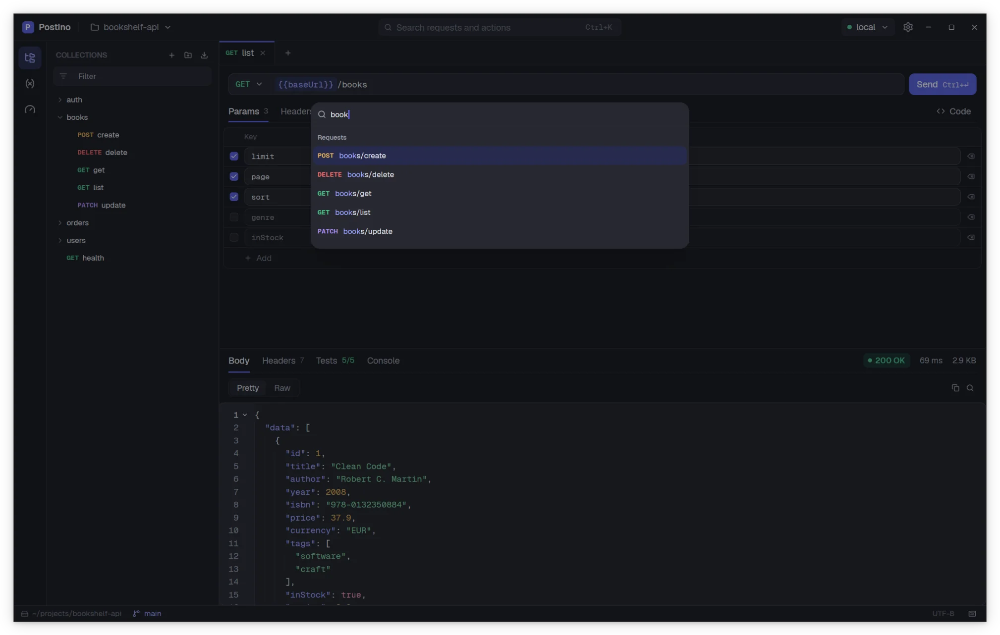

The interface
Postino uses the layout you probably know from other API clients: collections on the left, the request on top and the response below. This page names every part of the window, so the rest of the documentation can refer to them.


Title bar
From left to right:
- Workspace switcher. Shows the name of the open folder. Click it to reopen one of your last ten workspaces or to choose Open folder….
- Search. The box in the middle, Search requests and actions, opens the command palette. Its shortcut is Ctrl K.
- Environment pill. The active environment, with a colored dot. Click it to switch environments. See switching environments.
- Settings. The gear opens Settings (Ctrl ,).
On Linux Postino draws its own window chrome, including the minimize, maximize and close buttons at the right of the title bar.
Activity rail
The narrow column at the far left switches what the sidebar shows:
| Button | Sidebar shows |
|---|---|
| Collections | The tree of folders and requests of the workspace. |
| Environments | The environments of the workspace, which one is active, and a button to create one. |
| Load tests | The requests and folders you can load test, and the load test runs of this session. |
It works like the activity bar of a code editor: clicking another section switches to it, clicking the active section hides the sidebar, and clicking any button while the sidebar is hidden shows it again.
Sidebar
Collections
The header has buttons to create a new request and a new folder at the root of the workspace, and the Import menu for Postman files. Below it, a Filter box narrows the tree as you type: it matches request names and paths, ignores case, and keeps the parent folders of every match visible.
Each request shows its method in color. Folders come first, then requests, both in natural order, so item2 sorts before item10. Right click an entry for its context menu:
| Action | On a folder | On a request |
|---|---|---|
| New request | Creates a request inside the folder | |
| New folder | Creates a subfolder | |
| Load test… | Load tests every request in the folder | Load tests this request |
| Rename | Renames the folder on disk | Renames the file on disk |
| Delete | Deletes the folder and everything in it, after asking | Deletes the file, after asking |
A file that cannot be parsed is listed as name (broken). See a request shows as broken.
The sidebar can be resized by dragging its right edge.
Environments
Lists every environments/*.env file of the workspace and marks the active one. Click an environment to open it in the environment editor. The header has New environment and Reveal, which opens the environments/ folder in your file manager.
Load tests
Lists the Targets (the requests and folders you can point a load test at) and the Runs this session, each with its state: running with the elapsed time, done or stopped with its p95 latency, or failed. See Load testing.
Tabs
Every request, environment and load test you open gets a tab. A request tab shows its method and name. A dot instead of the close button means unsaved changes; hover the tab to reveal the close button again.
- Ctrl Tab and Ctrl Shift Tab move to the next and previous tab.
- Ctrl W closes the active tab.
- Ctrl S saves the active request or environment.
An environment tab asks before discarding unsaved changes. A request tab does not: closing it drops its edits. Save first.
Request editor
The top half of a request tab. The URL bar joins the method selector and the URL, and shows {{variables}} as chips. Next to it are the Send button and Code, which opens the code snippet dialog. Below, six tabs, each with a count when it has content:
| Tab | Contents | Stored in the file as |
|---|---|---|
| Params | Query parameters, a key and value table | ::: query |
| Headers | Request headers, a key and value table | Lines after the request line |
| Body | JSON, Text, XML, Form or None, with a code editor and a Format button | ::: body <type> |
| Pre-request | JavaScript run before sending | ::: pre |
| Post-response | JavaScript run after the response arrives | ::: post |
| Docs | Free notes about the request, in Markdown | ::: docs |
All of it is explained in Building requests.
Response pane
The bottom half of a request tab. Before the first send it says Send the request to see the response. After a send, the right side shows the status badge (green for 2xx, blue for 3xx, amber for 4xx, red for 5xx), the total time and the body size. The tabs are:
- Body, with Pretty and Raw views, a copy button and a search button.
- Headers, with the count of response headers.
- Tests, with
passed/total, green when every test passed and red otherwise. - Console, with the output of
console.log()and friends.
Warnings, such as unknown variables or an invalid TLS certificate, appear as a strip above the body. See Reading responses.
Status bar
The thin bar at the bottom shows the workspace path and, when the workspace is inside a git repository, the current branch (or the short commit hash on a detached HEAD). On the right, Unsaved changes appears while the active tab is dirty, and a keyboard button opens the shortcuts cheat sheet. When the updater has a new version ready, the status bar also shows Update ready, restart and a link to the release notes.
Command palette
Press Ctrl K (⌘ K on macOS) or click the search box in the title bar. Type a few letters: the palette matches them in order, not necessarily together, so aulo finds auth/login. Matches at the start of words rank higher. Use the arrow keys and Enter to choose.


The palette has three groups:
- Requests
- Every request of the workspace, by path, with its method. Choosing one opens it in a tab.
- Environments
- No environment and every environment, with their shortcuts. Choosing one makes it active.
- Actions
- Send request, Save, New request, New folder, Import Postman collection…, Import Postman environment…, Open Settings, Keyboard shortcuts, Open folder…, New load test, Toggle theme and, in builds with an updater, Check for updates.
Keyboard shortcuts cheat sheet
Press F1 (⌘ Shift / on macOS) or click the keyboard button in the status bar. The full list is in Keyboard shortcuts.